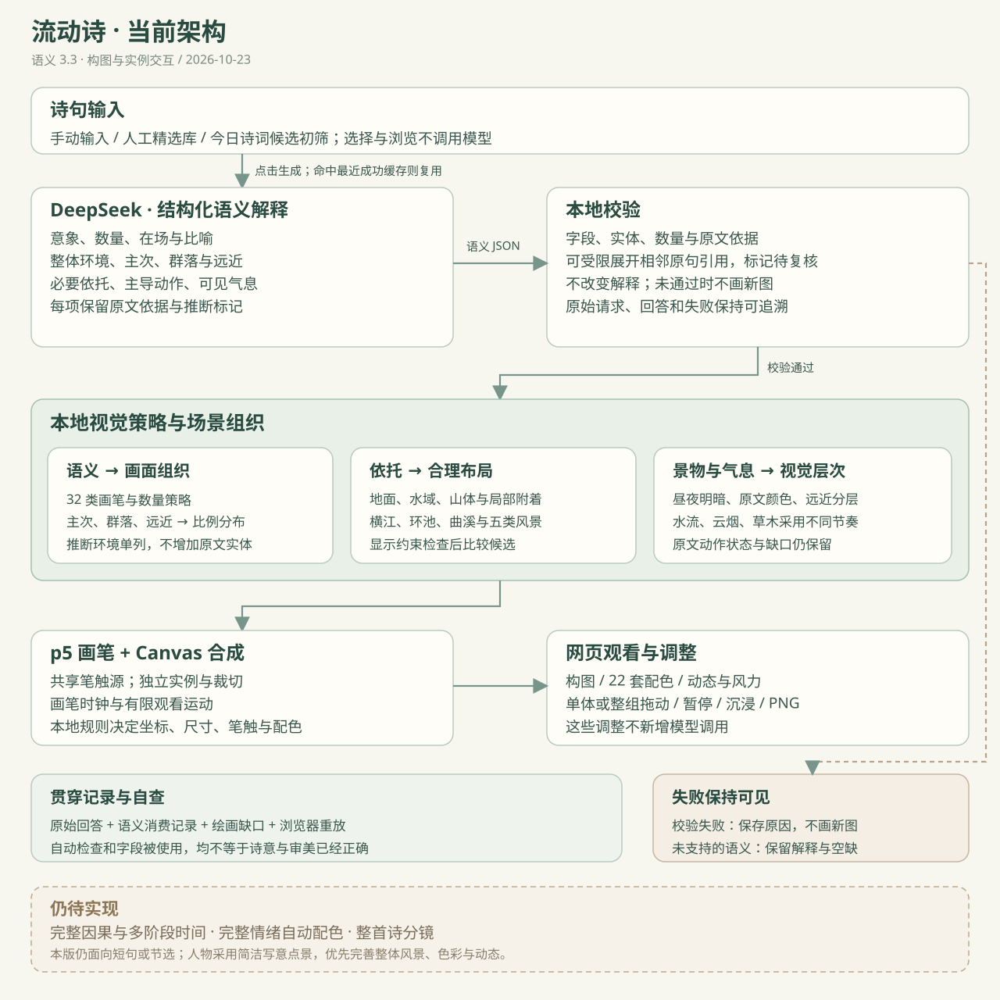

下图展示主风景通路；新统一表达支路见下方说明。

对应的实现模块
请求与记录：service.mjs；协议检查：composition-contract.mjs；语义转视觉：semantic-policy.mjs；数量与场景：composition.mjs / world-layout.mjs / scene-organization.mjs / scene-integrity.mjs；绘制与时钟：drawing/core.js / scene.js；主网页：app.js / poem-flow/index.html。
模型只接收原句，不接收本地编辑目标。作者与出处作为记录元数据保留。模型不给坐标或可执行绘图代码；具体视觉参数由项目本地策略决定。
独立的抽象试验支路
抽象试画：原句 → abstract-1.0 关系与过程 → 本地检查 → 十三类笔触、空间与种子变化 → 点击扰动／拖动留痕。含具体景物时，可复用已有画笔作叠加。新模块为 abstract-contract.mjs / abstract-plan.mjs / abstract-scene.js；四次首次检查 3/4，一份修正检查边界后本地重放，原失败保留。第二轮新增三句首次结构检查 3/3，词义与逻辑问题单独提示；新增涡流、浸染、裂隙、游丝及触摸回应，见40 张新增对照。该试验不改主风景协议。
统一构图与表达控制
景意交融：一次 expression-1.0 请求 → 同一套实体、景物数量／空间与抽象关系 → 本地共享构图 → 风景优先／景意交融／抽象优先。三档共享位置、实例与依托；纹理按原画笔轮廓和区域裁切，点景保持可辨。模块为 expression-contract.mjs / expression-plan.mjs / expression-layout.js，复用 scene.js / abstract-scene.js。三次首次结构检查 3/3，另有三份历史适配，文学解释与新画面仍待复核。六句／18 张对照；旧入口及最近结果分别保留。